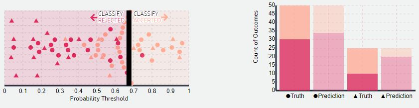
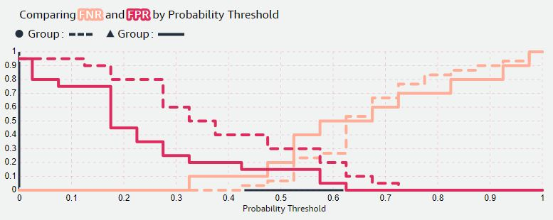

Machine Learning models learn to make predictions by looking at data with the help of algorithms, both of which can potentially be biased against different groups of people. Unwanted bias in machine learning can inadvertently harm, and negatively stereotype against underrepresented or (historically and otherwise) disfavored groups. Therefore, it is crucial to evaluate and control data and model predictions not only for general machine learning performance but also for bias.
Defining Equalized Odds
In this article, we will review a well-known fairness criterion, called
'Equalized Odds' (EO). EO aims to equalize the
error a model makes when predicting categorical outcomes for different
groups, here:
and
.
EO takes the merit different groups of people have into account
by considering the underlying ground truth distribution of the labels. This
ensures the errors across outcomes and groups are similar, i.e. fair.
For example, if we consider a hiring scenario, the errors EO compares are
'wrong rejection' and 'wrong acceptance'. We could simply count the number
of wrong rejections and acceptances but as groups generally differ in size,
we should use
error rates instead as those are scale
invariant. Useful error rates to consider are the False Negative Rate (FNR)[ℹ]
and False Positive Rate (FPR)[ℹ]
of a classifier, or the combination of both those error rates[ℹ]
.
According to EO, a
model is fair if the predictions it makes have the same TPR[ℹ] and FPR across all groups in the dataset. Formally, this can be written as:
where denotes predictions (here: positive), refers to the group membership and represents the ground
truth.
Equalized odds aims to match TPR and FPR for different groups, punishing models that perform well for one group only.
Unfortunately this can be very hard to achieve in practice, so it makes
sense to relax the EO criterion and consider a modified version of the EO
equation with for equalizing TPR
(equal opportunity), or for equalizing FPR.
Equalized Odds to measure fairness
Using the EO equation, we can derive different metrics to measure the fairness of a model. For example, we can look at:
False Positive Error Rate (FPR) Balance
To calculate FPR balance, we work out FPR
[ℹ]
per group and take the difference:
The resulting value will be in the range [-1, 1], the closer to 0, the more predictive equality the model achieves and we satisfy the EO equation where .
False Negative Error Rate (FNR) Balance
To calculate FNR balance, we work out FNR [ℹ] per group and take the difference. It is also possible to
rewrite this using TPR[ℹ] :
The resulting value will be in the range [-1, 1], the closer to 0 the closer to equal opportunity the groups for EO equation where .
The metrics above show how fair/unfair the model is by measuring either FPR
or FNR; but according to EO, we need both values to be the same
(known as Conditional Procedure Accuracy Equality) while
also achieving a certain predictive performance
with the model.
Have a look at the beeswarm plot below. It shows how the predictions of a model
change when the probability threshold (the slider) is moved.
Try to find a probability threshold that results in 0 FPR and FNR difference
at the same time; is it even possible? Also observe what the
model performance
(here: group-wise accuracy) is doing as you move the slider.

Note that as you drag the slider, you might find some so-called lazy solutions where everyone gets rejected or accepted. These are solutions where the FPR or FNR difference is indeed 0. However,
while these solutions technically meet the relaxed version of EO, they make
little sense from a general ML performance perspective (check out the
accuracy values of the model).
You can also verify that there is no probability threshold where FPR and FPR
are the same for both groups by comparing the values in the chart below:

Equalized Odds to achieve fairness
Using EO, we can also influence the predictions a model makes to achieve a more fair outcome. We are going to look at two different ways of performing this: by constraining the model during training and by introducing group-wise probability thresholds for a trained model.
False Positive Error Rate (FPR) Balance
To calculate FPR balance, we work out FPR
[ℹ]
per group and take the difference:
The resulting value will be in the range [-1, 1], the closer to 0, the more predictive equality the model achieves and we satisfy the EO equation where .
False Negative Error Rate (FNR) Balance
To calculate FNR balance, we work out FNR [ℹ] per group and take the difference. It is also possible to
rewrite this using TPR[ℹ] :
The resulting value will be in the range [-1, 1], the closer to 0 the closer to equal opportunity the groups for EO equation where .
To visualize the search for the probability thresholds that meets EO, we can look at the so-called ROC curves for both groups, and . We can see that for most probability thresholds the TPR and FPR values are different per group. For the dataset shown below, there is only one point where TPR and FPR are equal for both groups (and not lazy solutions); this is where the EO criterion is satisfied.
The End
While machine learning algorithms have the potential to revolutionize decision-making, we have to ensure that a fairness criteria is used for measuring any potential bias in addition to general Machine Learning metrics. Depending on the outcome of the bias evaluation we should include bias mitigation. Equality of Odds (EO) offers a promising approach to mitigate bias and is a method that can be used in different ways (and even during post-processing with access only to the predictions). However, before using EO for evaluation or bias mitigation, we should carefully consider the context and potential trade-offs between competing objectives.
This article is a product of the following resources + the awesome people who made (and contributed to) them:
[1] Fairness and Machine Learning
(Solon Barocas, Moritz Hardt, Arvind Narayanan).
[2] Fairness Beyond Disparate Treatment & Disparate Impact: Learning Classification without Disparate Mistreatment
(Muhammad Bilal Zafar, Isabel Valera, Manuel Gomez Rodriguez, Krishna P. Gummadi, 2016).
[3] Equality of Opportunity in Supervised Learning
(Moritz Hardt, Eric Price, Nathan Srebro, 2016).
D3.js
(Mike Bostock &
Philippe Rivière)
KaTeX
(Emily Eisenberg
& Sophie Alpert)
Svelte
(Rich Harris)